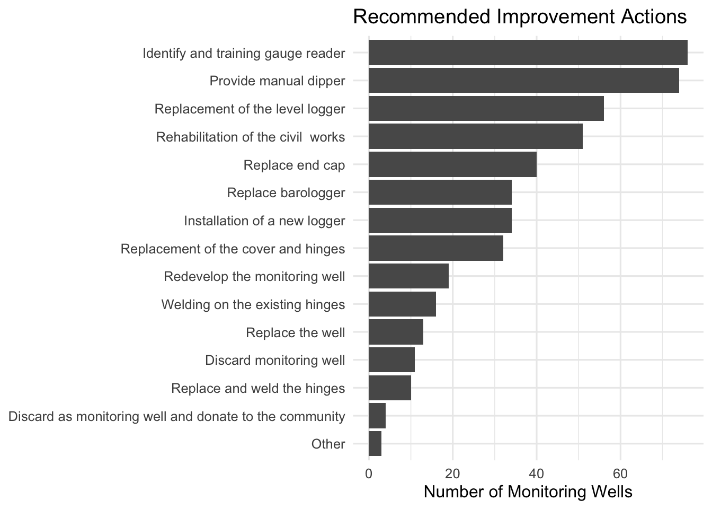

The Groundwater Monitoring Infrastructure Assessment Dataset (2022 to 2023) is an open dataset published by BASEflow Malawi. The dataset contains field observations collected during an assessment of groundwater monitoring infrastructure in Nkhotakota District, Malawi in 2022 and 2023. It includes information on monitoring well characteristics, groundwater level measurements, monitoring equipment, site accessibility, infrastructure condition, community awareness, and recommended maintenance and rehabilitation actions.
The dataset captures key attributes of groundwater monitoring sites, including well depth, static groundwater level, measurement methods, level logger and barometric logger availability, equipment condition, site accessibility, monitoring well purpose, vandalism risks, nearby water source types, and infrastructure improvement recommendations. Together, these data provide a comprehensive assessment of the operational status and maintenance needs of groundwater monitoring infrastructure in the study area.
This dataset supports evidence-based groundwater management and can be used to evaluate the condition of monitoring infrastructure, identify maintenance priorities, strengthen groundwater monitoring networks, and support sustainable groundwater resource management in Malawi.
Potential Use Cases
The dataset is suitable for use by:
Government ministries and water authorities responsible for groundwater monitoring and water resources management.
Researchers and universities conducting studies in hydrogeology, groundwater monitoring, climate resilience, and environmental management.
Development partners and non-governmental organizations implementing groundwater and water security programmes.
Hydrogeologists and groundwater professionals assessing monitoring network performance and infrastructure condition.
GIS analysts and data scientists developing spatial analyses, dashboards, and predictive models for groundwater monitoring.
Policy makers supporting groundwater governance, infrastructure planning, and investment decisions.
Students undertaking research in groundwater, environmental science, civil engineering, and water resources.
Organizations contributing to Sustainable Development Goal 6 (Clean Water and Sanitation), integrated water resources management, and climate adaptation initiatives.
Installation
You can install the development version of gwinfraassess from GitHub with:
# install.packages("devtools")
devtools::install_github("openwashdata/gwinfraassess")
## Run the following code in console if you don't have the packages
## install.packages(c("dplyr", "knitr", "readr", "stringr", "gt", "kableExtra"))
library(dplyr)
library(knitr)
library(readr)
library(stringr)
library(gt)
library(kableExtra)Alternatively, you can download the individual datasets as a CSV or XLSX file from the table below.
- Click Download CSV. A window opens that displays the CSV in your browser.
- Right-click anywhere inside the window and select “Save Page As…”.
- Save the file in a folder of your choice.
| dataset | CSV | XLSX |
|---|---|---|
| gwinfraassess | Download CSV | Download XLSX |
Data
The package provides access to The Groundwater Monitoring Infrastructure Assessment Dataset collected by BASEflow in 2022 and 2023, in Nkhotakota district.
gwinfraassess
The dataset gwinfraassess contains 123 observations and 40 variables
gwinfraassess |>
head(3) |>
gt::gt() |>
gt::as_raw_html()| submitted_on | level_measurable | measure_reason | well_depth | depth_unit | depth_over100 | endcap_available | measure_method | measure_datum | casing_length | casing_unit | static_level | level_unit | logger_available | logger_not_available_reason | logger_type | logger_depth | logger_unit | logger_download | download_problem_reason | barlogger_available | barlogger_download | traditional_authority | district | dipper_available | dipper_condition | dipper_problem | ppe_available | community_sensitized | well_purpose | vandalism_reason | vandal_other | vandal_control | control_other | site_importance | importance_other | site_accessible | potable_access | source_type | improvement_plan |
|---|---|---|---|---|---|---|---|---|---|---|---|---|---|---|---|---|---|---|---|---|---|---|---|---|---|---|---|---|---|---|---|---|---|---|---|---|---|---|---|
For an overview of the variable names, see the following table.
| variable_name | variable_type | description |
|---|---|---|
| submitted_on | character | Date and time the assessment record was submitted. |
| level_measurable | character | Indicates whether the groundwater level could be measured. |
| measure_reason | character | Reason why the groundwater level could not be measured. |
| well_depth | numeric | Measured depth of the monitoring well. |
| depth_unit | character | Unit of measurement for well depth. |
| depth_over100 | character | Indicates whether the well depth exceeds 100 meters. |
| endcap_available | character | Indicates whether the monitoring well end cap is present. |
| measure_method | character | Method used to measure the groundwater level. |
| measure_datum | character | Reference datum used for groundwater level measurements. |
| casing_length | numeric | Length of well casing extending above ground level. |
| casing_unit | character | Unit of measurement for casing length. |
| static_level | numeric | Measured static groundwater level. |
| level_unit | character | Unit of measurement for static groundwater level. |
| logger_available | character | Indicates whether a groundwater level logger is installed. |
| logger_not_available_reason | character | Reason why a groundwater level logger is not available. |
| logger_type | character | Type or model of the installed groundwater level logger. |
| logger_depth | numeric | Installation depth of the groundwater level logger. |
| logger_unit | character | Unit of measurement for logger installation depth. |
| logger_download | character | Indicates whether data were successfully downloaded from the groundwater level logger. |
| download_problem_reason | character | Reason why logger data could not be downloaded. |
| barlogger_available | character | Indicates whether a barometric logger is installed. |
| barlogger_download | character | Indicates whether data were successfully downloaded from the barometric logger. |
| traditional_authority | character | Traditional Authority where the monitoring well is located. |
| district | character | Administrative district where the monitoring well is located. |
| dipper_available | character | Indicates whether a manual water level dipper is available. |
| dipper_condition | character | Physical condition of the manual water level dipper. |
| dipper_problem | character | Problem identified with the manual water level dipper. |
| ppe_available | character | Indicates whether personal protective equipment is available for monitoring activities. |
| community_sensitized | character | Indicates whether the surrounding community has been informed about the purpose of the monitoring well. |
| well_purpose | character | Primary purpose of the groundwater monitoring well. |
| vandalism_reason | character | Reported reason why the monitoring well may be vandalized or damaged. |
| vandal_other | character | Other reported reason for vandalism or damage. |
| vandal_control | character | Suggested strategy for preventing vandalism or damage to the monitoring well. |
| control_other | character | Other suggested strategy for preventing vandalism or damage. |
| site_importance | character | Strategic importance of the monitoring well location. |
| importance_other | character | Other description of the site’s strategic importance. |
| site_accessible | character | Indicates whether the monitoring well site is easily accessible. |
| potable_access | character | Indicates whether the surrounding community has access to a potable water supply. |
| source_type | character | Primary type of water source used by the surrounding community. |
| improvement_plan | character | Recommended actions to improve the monitoring well and its associated infrastructure. |
Example
library(gwinfraassess)
# Visualization: Improvement Recommendations
# libraries
library(dplyr)
library(tidyr)
library(ggplot2)
library(stringr)
#filter rows where improvement_plan is NA or null
improve_plot <-
gwinfraassess %>%
filter(!is.na(improvement_plan),
improvement_plan != "") %>%
separate_rows(improvement_plan, sep = ",") %>%
mutate(improvement_plan = str_trim(improvement_plan)) %>%
count(improvement_plan, sort = TRUE)
#Plot the results
ggplot(improve_plot,
aes(x = reorder(improvement_plan, n),
y = n)) +
geom_col() +
coord_flip() +
labs(
title = "Recommended Improvement Actions",
x = NULL,
y = "Number of Monitoring Wells"
) +
theme_minimal(base_size = 12)
License
Data are available as CC-BY.
Citation
Please cite this package using:
citation("gwinfraassess")
#> To cite package 'gwinfraassess' in publications use:
#>
#> Mhango E (2026). "gwinfraassess: Groundwater Monitoring Wells,
#> Nkhotakota, Malawi 2022-2023." doi:10.5281/zenodo.21839342
#> <https://doi.org/10.5281/zenodo.21839342>.
#> <https://github.com/openwashdata/gwinfraassess>.
#>
#> A BibTeX entry for LaTeX users is
#>
#> @Misc{mhango:2026,
#> title = {gwinfraassess: Groundwater Monitoring Wells, Nkhotakota, Malawi 2022-2023},
#> author = {Emmanuel Mhango},
#> year = {2026},
#> doi = {10.5281/zenodo.21839342},
#> url = {https://github.com/openwashdata/gwinfraassess},
#> abstract = {The Groundwater Monitoring Infrastructure Assessment Dataset (2022 to 2023) is an open dataset published by BASEflow Malawi. The dataset contains field observations collected during an assessment of groundwater monitoring infrastructure in Nkhotakota District, Malawi. It includes information on monitoring well characteristics, groundwater level measurements, monitoring equipment, site accessibility, infrastructure condition, community awareness, and recommended maintenance and rehabilitation actions.},
#> keywords = {open data,washdata,groundwater,groundwater monitoring,monitoring wells,water levels,Malawi},
#> version = {1.0.1},
#> }